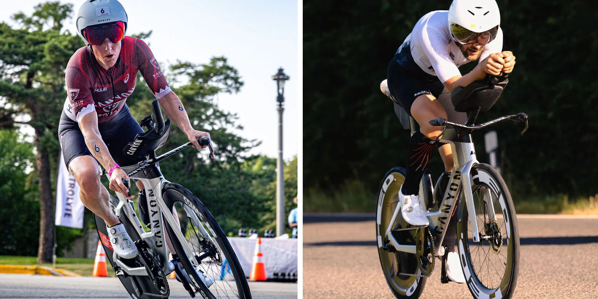
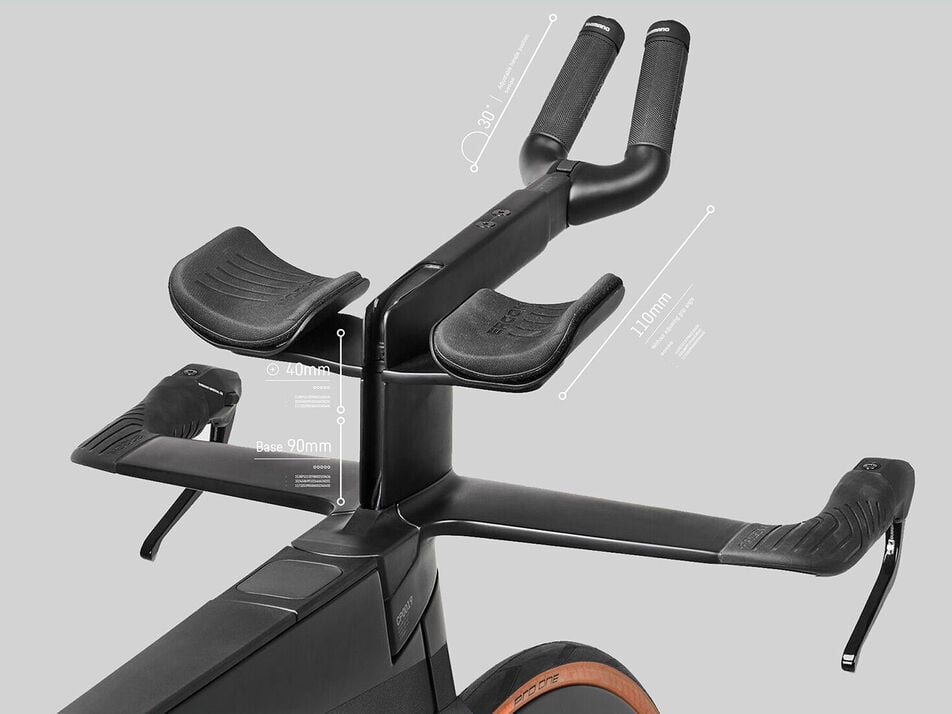

6 fois vainqueur du championnat du monde. Un record du monde sur de longues distances. Couru par le meilleur palmarès du triathlon mondial.
Si vous parlez de triathlon, vous parlez du Canyon Speedmax.
Produit d’une étroite collaboration entre nos ingénieurs et des professionnels de renommée mondiale tels que Laura Philipp et le champion du monde Sam Laidlow, nous concevons le Speedmax avec un seul objectif : vous emmener au T2, le plus vite possible.
Le processus de développement axé sur les pros a commencé en 2015 avec Jan Frodeno. Ensemble, grâce à son inestimable contribution, nous avons construit le vélo qui établit la référence en triathlon.
Nous avons méticuleusement simulé et sculpté chaque millimètre du Speedmax CFR et CF SLX à l'aide de superordinateurs et de la technologie de soufflerie avec nos partenaires aérodynamiques Swiss Side pour offrir un aérodynamisme digne des champions du monde de triathlon.
Chaque Speedmax CFR et CF SLX est configurable pour vous permettre d’adopter la position la plus rapide et la plus confortable possible.
Ajustez votre morphologie au millimètre près grâce à la conception modulaire avancée et aux possibilités de réglage de la largeur et de la hauteur du cockpit en carbone aérodynamique.
